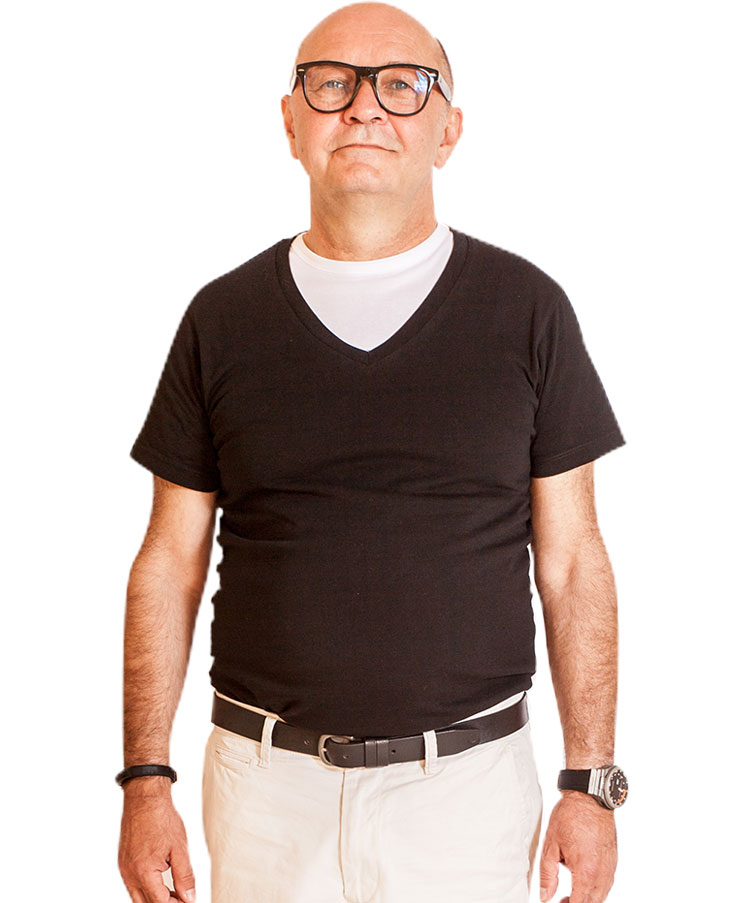
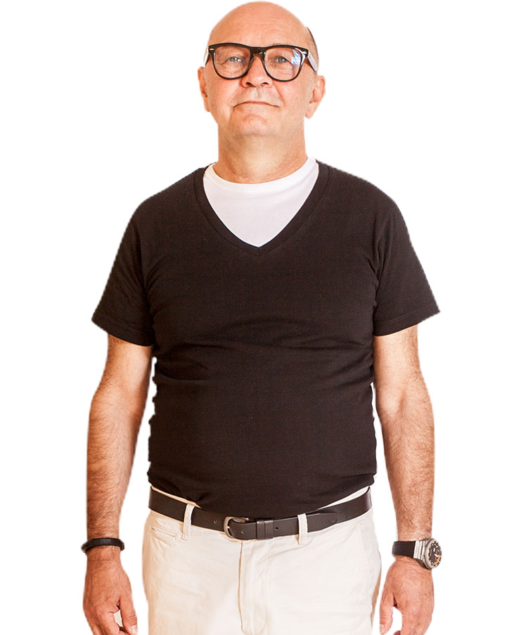

Jetzt Anrufen | +49 1520 405 2121
Jetzt Anrufen | +49 1520 405 2121
 AT: +43 676 933 3778
DE: +49 1520 405 2121
Kontaktiere uns
de
AT: +43 676 933 3778
DE: +49 1520 405 2121
Kontaktiere uns
de

Dr.med. Dr.med.dent. MSc (in ästhetischer und restaurativer Zahnheilkunde) MSc (in Implantat-Ästhetik). Dr. Frank Kannmann promovierte an der Semmelweis Universität im Jahre 1980, und nahm gleich danach seine Tätigkeit als Vortragender und Forscher am Institut für Anatomie der Universitätsmedizin Rostock auf, wo er die Grade MD und Ph.D. erlangte. Er ist auch Experte in Embryologie, Anatomie und Histologie. Seine erste Zahnklinik gründete er 1985 in Augsburg.
Während seines postgradualen Studiums erwarb er Diplom in Implantologie, Laserzahnmedizin und ästhetischer Zahnmedizin. Er mag Reisen, Sporttauchen und Unterwasserfotografie.
zertifizierungen 



Sowohl als Zahnarzt als auch Privatperson sieht sich Dr.Christian Menko als Forscher. Er mag Reisen in nahe und ferne Länder, entdeckt gern unerforschte Gebiete, trifft sich mit interessanten, außergewöhnlichen und sogar exotischen Menschen, probiert gern ihre Speisen und lernt ihre Gewohnheiten kennen.
Damit nicht nur er allein von seinen Entdeckungen profitiert, lässt er auch andere an seinen Erkenntnissen teilhaben: seien es lehrreiche Geschichten oder die neusten Errungenschaften aus dem sich ständig weiterentwickelnden Bereich der Zahnmedizin.
zertifizierungen

Ich bin allgemeine Zahnärztin aus Südkorea. Ich absolvierte an der Universität in Pécs, Ungarn. Ich liebe meinen Job leidenschaftlich und möchte den Patienten als eine gute Bekannte näherkommen.
Ich spreche Englisch, Koreanisch, Chinesisch, Ungarisch und Deutsch.
In meiner Freizeit mache ich Fitness und Yoga-Übungen. Ich trinke gern verschiedene Teesorten und probiere auch unterschiedliche Kaffeebohnen aus.
zertifizierungen

Mein Name ist Hye-Won Jeon, ich komme aus Südkorea. Ich habe als allgemeine Zahnärztin an der Semmelweis Universität in Budapest absolviert. Ich spreche mehrere Sprachen: Englisch, Koreanisch, etwas Chinesisch, Ungarisch und Holländisch. Ich reise gern in fremde Länder, wo ich Menschen aus diversen Kulturen kennenlernen kann. Ich gehe jeden Tag ins Fitnessstudio und trainiere gern. Es ist eine hervorragende Möglichkeit für mich, Teil des HD-dental-Teams zu sein.
Wenn Sie in unserer Praxis vorbeikommen, sprechen Sie mich ruhig an.
zertifizierungen

Es ist ihre erste Arbeitsstelle. Sie spricht gern mit Patienten und unterstützt sie während der stressvollen Behandlungen.
Sie liebt ihr Pferd „Remény“ (Hoffnung auf Deutsch), das sie jeden Tag reitet und besucht. Ihre Freizeit verbringt sie gern auch mit Freunden, geht ins Kino, Konzerte und amüsiert sich gern.


In diesem Bereich arbeitet sie jetzt schon seit 10 Jahren. Ihr Ziel ist die höchste Zufriedenheit der Patienten und Ärzte.
Sie liebt Blumen insbesondere Lavendel. Sie hat 64 Pflanzen, aus denen sie Marmelade und Sirup macht. Sie besucht gern die ungarische Region Tihany mit ihren riesigen Lavendelfeldern.


Ihr Motto ist es, dass Empathie zu einer schnellen Kontaktaufnahme beiträgt. Das hilft den Menschen ihr gegenüber offener zu sein, was eine Schlüsselrolle für sie als Physiotherapeutin spielt. Sie erweitert ständig ihre Kenntnisse, damit die den Patienten Hilfe in zahlreichen Bereichen anbieten kann. Ihr größter Traum ist es, die Dévény-Methode zu erlernen, damit sie mit Kindern arbeiten kann.
Sie reist gern, mag Sport und macht Cross-Fitness-Übungen.
Ursprünglich arbeitete er als Zugführer und so konnte er viel reisen. Nach der Geburt seines ersten Kindes wollte er mehr Zeit mit seiner Familie verbringen und wurde Masseur. Er ist gern für die Menschen da, und hilft ihnen den Schmerz zu lindern.
Seine Hobbys sind Fischen, Radfahren, Fußball und andere Sportarten.


Als Rezeptionistin arbeitet sie in der Zahnklinik schon seit 15 Jahren. Es ist für sie immer eine interessante Erfahrung, Menschen verschiedener Nationalitäten kennenzulernen. Vorher probierte sie mehrere Berufe aus, aber diesen mag sie am meisten.
Ihre Freizeit verbringt sie mit Familie und Freunden. Sie reist gern, macht Yoga und Nia.

Ich habe mein Studium an der Medizinischen Fakultät der Universität in Pécs im Jahre 2003 absolviert. Meine postgradualen Prüfungen in den Bereichen der Anästhesie und der Intensivtherapie habe ich erfolgreich abgelegt. Ich halte meinen Beruf als Anästhesist für sehr wichtig und verantwortungsvoll, denn unsere Patienten vertrauen uns ihr Leben an.
Das Positive an meinem Job ist es, dass ich die Patienten dadurch vom Stress und vom Schmerz während der Behandlung befreien kann.


Ich arbeite seit über 30 Jahren als medizinische Fachangestellte. Seit mehreren Jahren bin ich die Assistentin von Dr. Bátorfi bei anästhetischen Eingriffen in verschiedenen Zahnarztpraxen.
In meiner Freizeit koche und backe ich oft, womit ich meine Familie gern verwöhne. Außerdem gehören Lesen und Gartenarbeit ebenfalls zu meinen Hobbys, wie auch in letzter Zeit selbstgefertigte Schmuckstücke aus Perlen.


Ich bin gelernte Zahntechnikerin und mache gerade meine Ausbildung als Zahnarzthelferin in HD-dental.
In meiner Freizeit mache ich Ausflüge mit meinen Freunden und gehe gern ins Kino.

 Auf der Karte suchen
Auf der Karte suchen
soziale
medien